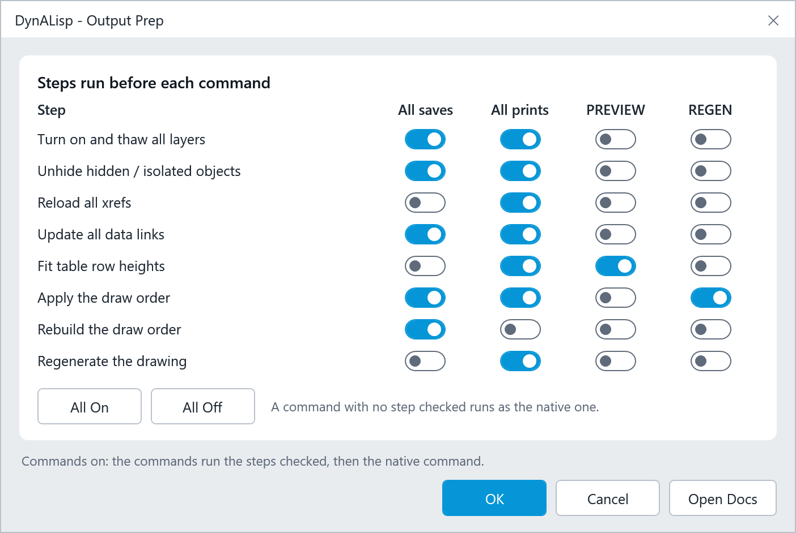

Command Optimizer
| Function Syntax | Dyl-CmdOptimizer, SAVE, QSAVE, SAVEAS, +SAVEAS, PLOT, PUBLISH, PREVIEW, EXPORTPDF, EXPORTDWF, EXPORTDWFX, REGEN |
| Requires | AutoCAD 2025 or later for Windows |
| Licence | GNU General Public License v3 |
Program Description
Your drawing is cleaned up every time you save or plot it, without a thought: layers on, hidden objects shown, xrefs reloaded, tables updated. Ctrl+S still saves.

How To Use
- In Dyl-Settings, turn on Commands.
- Click its square button and check the steps to run for All saves, All prints, PREVIEW and REGEN.
- Save, plot or export as usual.
Good To Know
- The steps are those of Prep Drawing.
- Dyl-RestoreCommands gives you the usual AutoCAD commands for this session.
Command Names And Aliases
The short names are aliases of the command: change them in Dyl-Suite. The rows marked ↳ are the AutoCAD commands it replaces.
| Command | Aliases | Name |
|---|---|---|
| Dyl-CmdOptimizer | – | Command Optimizer |
| ↳ PLOT | – | Plot |
| ↳ PREVIEW | – | Plot Preview |
| ↳ REGEN | – | Regen |
| ↳ PUBLISH | – | Publish |
| ↳ QSAVE | – | Quick Save |
| ↳ SAVEAS | – | Save As |
| ↳ +SAVEAS | – | Save As Options |
| ↳ SAVE | – | Save |
| ↳ EXPORTPDF | – | Export PDF |
| ↳ EXPORTDWF | – | Export DWF |
| ↳ EXPORTDWFX | – | Export DWFx |